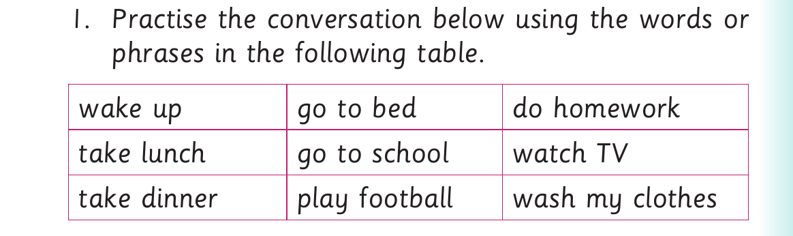

Daily activities - conversation practice
Activity 2

1. Practise the conversation below using the words or phrases in the following table. wake up go to bed do homework take lunch go to school watch TV take dinner play football wash my clothes
(a) What do you do in the morning? I ___________________ in the morning.
(b) What do you do in the afternoon? I ___________________ in the afternoon.
(c) What do you do in the evening? I ___________________ in the evening.
(d) What do you do at night? I ___________________ at night.
(e) What do you do over the weekend? I ___________________ over the weekend.
2. What do you normally do in the following times of the day?
(a) Morning
(b) Afternoon
(c) Evening
(d) Night